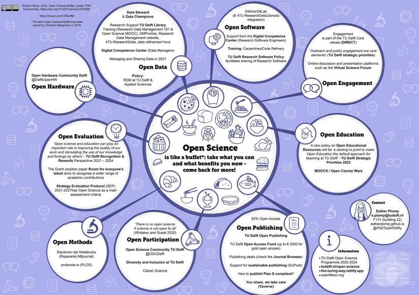

Open Science is like a buffet*: take what you can and what benefits you now – come back for more!

This overview highlights resources that are available for TU Delft researchers in their Open Science journey. Please see the poster for the full visual representation with the links embedded.
Open Data
Research Support TU Delft Library
Training (Research Data Management 101 & Open Science MOOC)
Digital Competence Center (Data Managers)
Open Software
GitHub/GitLab (& 4TU.ResearchData/Zenodo integration)
Support from the Digital Competence Center (Research Software Engineers)
TU Delft Research Software Policy facilitates sharing of Research Software
Open Engagement
Engagement is part of the TU Delft Core values (DIRECT)
‘Outreach and public engagement are core elements’ (TU Delft strategic priorities 2022)
Online discussion and presentation platforms such as the Virtual Science Forum
Open Education
A new policy on Open Educational Resources will be ‘a starting to point to make Open Education the default approach for teaching at TU Delft’ – TU Delft Strategic Priorities 2022
Open Publishing
TU Delft Open Access Fund (up to €2000 for gold open access)
Publishing deals (check the Journal Browser)
Support for sustainable publishing (SciPost)
Open Participation
‘There is no open science if science is not open to all’ (Whitaker and Guest 2020)
Open Methods
Five keys to writing a reproducible lab protocol (Baker 2021)
Document as you go: consider how you share your method from day one
Write less, show more: consider using videos (see for example the Journal of Visualized Experiments)
Link, template, standardise: by using Electronic Lab Notebooks
Deposit and document reagents (see RRIDs)
Communicate: platforms such as protocols.io allow for easier communication
Open Evaluation
‘Open science and education can play an important role in improving the quality of our work and stimulating the use of our knowledge and findings by others’ – TU Delft Recognition & Rewards Perspective 2021 – 2024
The Dutch position paper Room for everyone’s talent aims to recognise a wider range of academic contributions
Strategy Evaluation Protocol (SEP) – 2021-2027 has Open Science as a main assessment criteria
Open Hardware
More information:
*The term Open Science Buffet has been coined by Christina Bergmann in 2019.